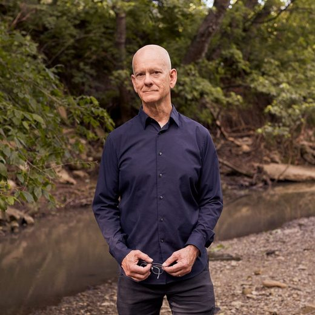
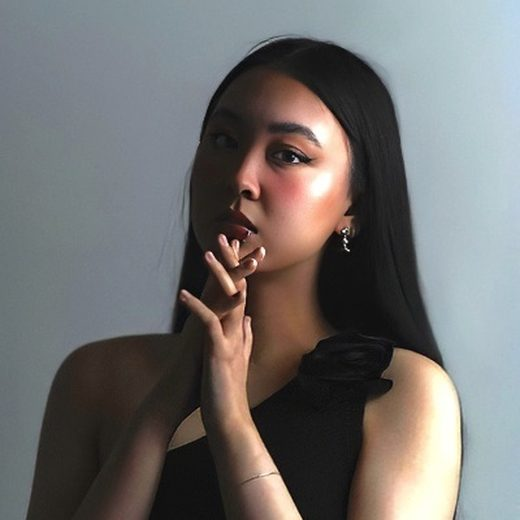
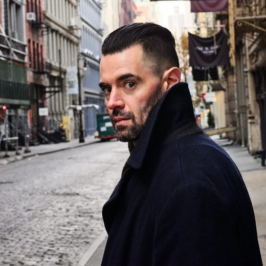
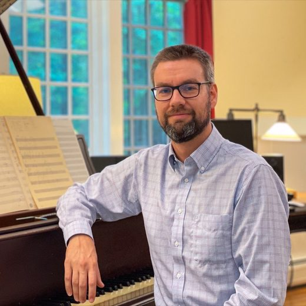
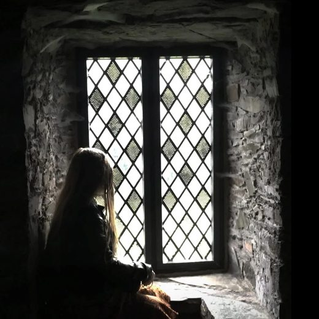
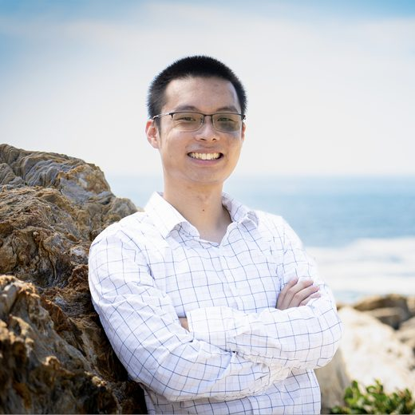
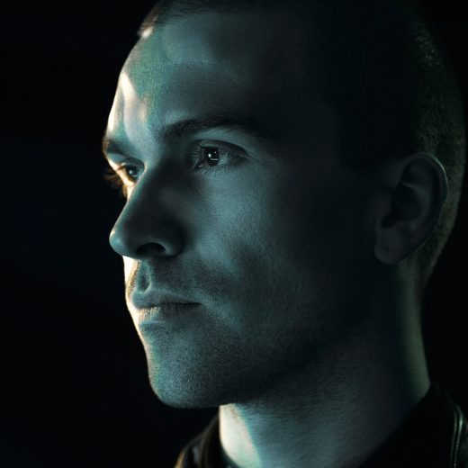

American composers
Call for Scores ·
American composers.
CreArtBox opens its annual Call for Scores for the 2027/28 season. The American call takes applications from 22 October to 15 December 2026, from American composers at any career stage, in the sense our funders use the word: US citizens wherever they live, and composers who have lived and worked in the United States for a significant period. Works chosen through it are played on the New York Series at The DiMenna Center for Classical Music and on touring engagements, and every score is read first without the composer's name on it.

What we are looking for
Our core ensemble is flute, violin, viola, cello and piano, and those are the players who will read your score. But we are flexible: we bring in other instruments when a piece asks for them, and we accept works for any instrumentation. If a score convinces us and the forces are not ours, we look for the way, and any adaptation is a conversation with you, after the selection.
As guidance rather than a rule, most of what we programme lasts between 5 and 15 minutes and asks for no more than eight players. Works already performed or recorded are welcome. We have no house style: what comes through this call shares an evening with Brahms, Schumann, Stravinsky and Sibelius.
Who can apply
American composers, of any age and at any career stage. Both halves of that sentence matter to us. The call is one of the ways we find composers early, and it is also how works by composers with long careers reach our programmes: among the works chosen through our calls for the 2026/27 season there is Eric Moe, a Guggenheim fellow honoured by the American Academy of Arts and Letters, next to composers who have just taken their first young-composer awards. A student and a professor are read the same way in the first round, because in the first round we do not know which is which.
What we mean by American
We use the definition our funders use, because the works chosen here are programmed with their support:
- Composers with United States citizenship, wherever they live.
- Composers without US citizenship who have lived and worked in the United States and its territories for a significant period.
No fixed number of years, and no residency paperwork: like the Aaron Copland Fund for Music, the Amphion Foundation and the Alice M. Ditson Fund, we set no rigid parameters and look at anything unclear case by case. If you are not sure which side of the line you fall on, write to info@creartbox.nyc before you apply and we will tell you which call to send to. Nobody is turned away for choosing wrong: a score sent to the American call by a composer who turns out to belong in the international one is simply read there instead.
Composers with no US connection at all are read through the International Call for Scores, which runs in parallel, with the same deadline and the same jury.
How the selection works
There are two rounds, and they are deliberately different from one another.
The first round is blind. Someone outside the jury prepares the material so that no name reaches the readers: the scores and the recordings arrive numbered, with the composer, the biography, the website and the country stripped out. Help us keep it clean by taking your name off the score itself and out of the file name. If a name is printed on the first page we remove it before the jury sees it, but a score that arrives anonymous is one fewer chance of a slip.
The second round is not blind, and that is on purpose. Once the readers have chosen the music on the music alone, we look at who wrote it: the website, the biography, the catalogue, the recordings, what else you have been doing. At that point we are no longer asking whether a piece is good. We are asking where it goes in a season, which evening it belongs to, who might play it on tour, and whether this is the beginning of a longer conversation rather than a single performance.
The jury is made up of members of the ensemble, who are the people who will have to play the piece, together with composers selected in previous cycles of this call.
It takes time. Reading everything properly, twice, around a season of concerts and tours, is slow work, and we would rather be slow than skim. Everyone who applies hears from us by spring 2027, whatever the answer is.
Preparing what you send
Two works, each with its score and, where you have one, a recording or a MIDI realisation. For each work, tell us the title, the year, the duration and the instrumentation: without those we cannot tell whether a piece fits an evening, and in the blind round the score is all we have to go on.
- Two scores, PDF, with your name removed from the page and from the file name.
- A recording or a MIDI realisation for each work, as a file or a link.
- Title, year, duration and instrumentation for each work.
- A short programme note for each work.
- A short biography and a link to your site. These are not read in the first round.
Everything goes through the application form. We do not read submissions sent by email.
Dates
- 22 October 2026, applications open.
- 15 December 2026, applications close.
- By spring 2027, every applicant hears back.
- September 2027, the season is announced with the selected works in it.
- October 2027 to August 2028, the performances.
What selected composers receive
Selected works are performed in the 2027/28 season on the New York Series at The DiMenna Center for Classical Music and on touring engagements, rehearsed with the ensemble and recorded, and programmed alongside the standard repertoire rather than set apart in a new-music evening. Eleven of the works played in the 2026/27 season arrived through the ensemble's calls. Works are integrated into interdisciplinary productions combining music with visual art and theatre, and past participants have received $10,000 each in commissions, with works taken on tour in the United States and Europe.
The fee
There is a $20 administrative fee, taken with the application through the form. It pays for the selection process: preparing and anonymising the material, and the readers' time.
Apply at tally.so/r/o9boab. Deadline 15 December 2026. Questions to info@creartbox.nyc.
Composers chosen through the call
The eleven composers whose works reached the 2026/27 season through CA1 and CA2. Earlier cycles brought works to the Fragile Form trilogy and to the CreArt Music Festival.

Eric Moe Pittsburgh, Pennsylvania Oliver Caplan Medford, Massachusetts
Yurui (Rain) Hou New York City
Alex Burtzos New York City / Orlando
Luke Carlson Branson, Missouri Gilad Cohen New Jersey
Samantha Leigh Sacks Kansas City, MO Paul Novak Chicago
Sam Wu Melbourne, Australia Zygmund de Somogyi London, UK
Eli Tausen á Lava Tórshavn, Faroe Islands